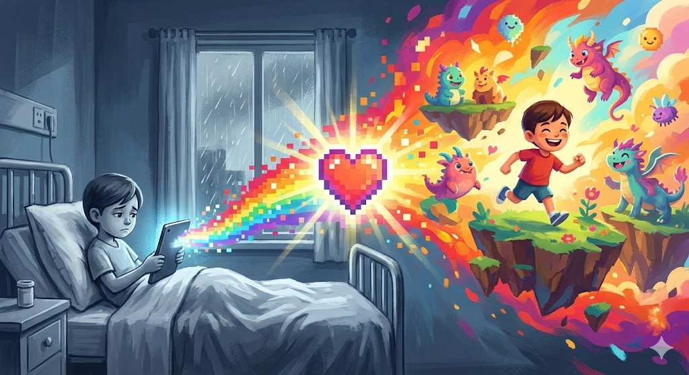
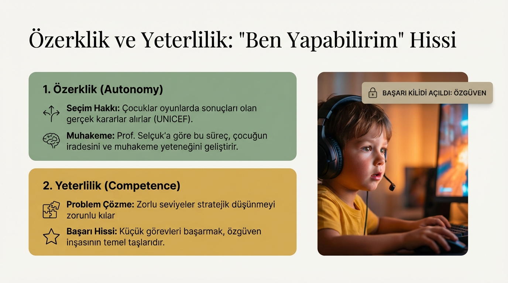
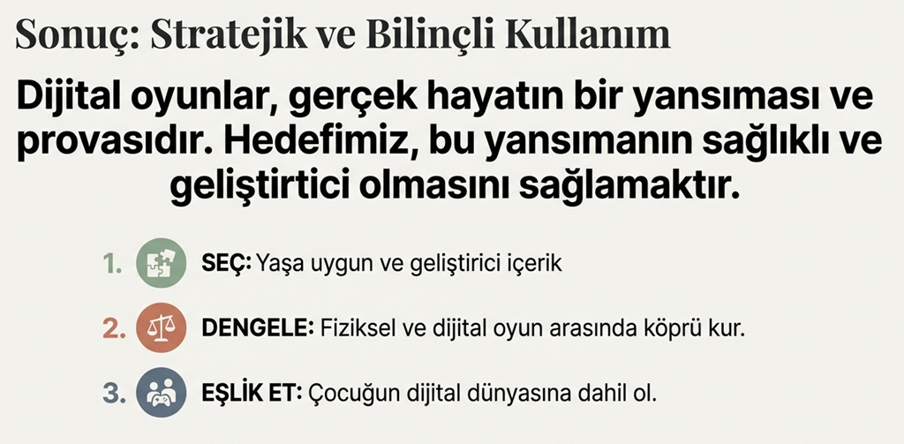

🛑 Mülakat Baskısını Kırmak
Riskli hastalıklarla mücadele eden çocuklarda dilek alma süreci yalnızca bir "bilgi toplama" işi değildir; bu, güvenli bir ilişki ve duygusal alan oluşturma sürecidir.
Hastane odasında bir çocuğun karşısına geçip elinizde not defteriyle "En büyük hayalin ne?" diye sormak, geleneksel bir soru-cevap formatıdır. Bu format, çoğu çocukta performans kaygısı yaratır.

Çocuk bu baskı altında susabilir, çekinebilir veya aklına gelen ilk basit şeyi söyleyerek konuyu kapatmak isteyebilir. Bizim amacımız; dijital oyunlarla bu süreci doğal, çocuk merkezli ve gelişimsel olarak uygun bir hale getirmektir.
🔥 Ortak Dikkat: Kamp Ateşi Etkisi
💡 Gerçek Hayattan Bir Örnek
Biriyle yüz yüze, gözlerinin içine bakarak derin bir sohbet etmek yetişkinler için bile zordur. Ancak yan yana oturup bir kamp ateşine veya bir manzaraya bakarken insanlar en derin sırlarını, hayallerini çok daha rahat anlatır. Çünkü "doğrudan hedeflenme" baskısı ortadan kalkmıştır.
İşte tasarladığımız dijital oyunlar, bu kamp ateşinin ta kendisidir. Literatürde buna Ortak Dikkat (Joint Attention) denir. Oyun sırasında gönüllü ve çocuğun dikkati ekrandaki uçan bir balona veya sallanan bir kancaya odaklandığında, aradaki soğuk duvar yıkılır. İletişim kendiliğinden, su gibi akmaya başlar.

🎮 Video Oyun Terapisi (VGT) Yaklaşımı
Video oyunları sadece eğlence aracı değildir; çocukların duygusal, bilişsel ve sosyal gelişimlerini güvenli bir ortamda destekleyen yenilikçi bir klinik yöntemdir.
🛡️ Güvenli Alan ve İfade
Sanal dünyanın korunaklı yapısı, gerçek hayattaki savunma mekanizmalarını azaltır. Çocuklar, sosyal yargılardan uzak bu alanda duygu ve düşüncelerini çok daha özgürce ifade edebilirler.
🧠 Duygusal Okuryazarlık
Oyunun sağladığı güvenli alanda çocuklar korku veya hayal kırıklığı gibi duygularla yüzleşir. Bu süreç, kendi içsel durumlarını tanımalarına ve duygusal zekalarını eğitmelerine yardımcı olur.
🎭 Travmanın Dışa Vurumu
İfade edilmesi zor deneyimler, oyun karakterleri ve senaryoları üzerinden hikayeleştirilir. Avatarlar birer iletişim arayüzü haline gelerek çocuğun iç dünyasındaki karmaşayı dışa vurmasını sağlar.
💪 Başarısızlığı Tolere Etme
Oyunların doğasındaki "deneme-yanılma" döngüsü, hata yapmanın kabul edilebilir olduğunu öğretir. Bu durum, çocuğun pes etmeme becerisini ve genel özgüvenini artırır.
🌊 Akış (Flow) Durumu ve Özdenetim
Oyuna tam odaklanma (akış) hali, kaygıyı hafifletir. Bu yüksek konsantrasyon, problem çözme becerilerini iyileştirir ve güçlü bir duygusal özdenetim mekanizması oluşturur.
🤝 Empati ve İşbirliği
Gönüllü ile oyun sırasında kurulan işbirliği, "sosyal hissi" geliştirir. Kendi yönettikleri avatarların rolleri arasında bağ kurmak, yeni bakış açıları kazanmalarına fırsat tanır.
🧠 Oyun Sırasında Beyinde Neler Oluyor?
Bu yaklaşımın arkasında sadece eğlence değil, kanıta dayalı bir nörobilimsel ve dilsel altyapı yatmaktadır.
🛡️ Limbik Sistem (Duygusal Merkez)
Çocuk oyun oynamaya başladığında beynin duygusal işlemleme merkezi rahatlar. Çocuk kendini güvende hisseder ve kaygı seviyesi düşer.
✨ Default Mode Network (Hayal Gücü)
Güven sağlandığında, beynin hayal kurma ve zihinsel simülasyon motoru (DMN) devreye girer. Çocuk dileğini sadece söylemez, zihninde detaylandırır.
🗣️ İfade Kapasitesi (Aktif Özne)
Oyun, çocuğu sorguya çekilen bir "cevaplayıcı" konumundan çıkarır; hikaye anlatan, tasarlayan ve sembolik dil kullanan aktif bir özneye dönüştürür.
⭐ Özetle
Oyun bizim için bir amaç değil, çocuğun iç dünyasının kapılarını aralayan sihirli bir araçtır.
Dijital oyunlar aracılığıyla; ortak dikkat, motivasyon ve duygusal güvenlik sağlayarak çok daha özgün, detaylı ve çocuğun gerçek iç dünyasını yansıtan dilekler ortaya çıkarıyoruz.
